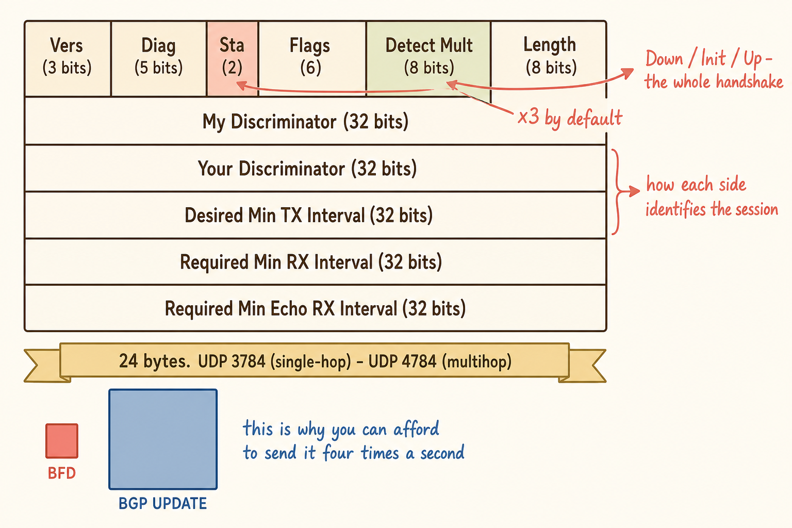

Overview — Cheap Is Not Free
BFD does one job: it asks the device at the other end whether it is still alive, and it asks often enough to get an answer in under a second. It is media independent, it is far lighter than a routing protocol keepalive, and it detects the failure mode that link state cannot see — a one-way device failure, where the optics stay lit and the router behind them has stopped thinking.
Because it is cheap per check, the instinct is to enable it everywhere. That instinct is wrong, and the reason is arithmetic rather than doctrine. At default timers, one BFD session costs four packets per second in each direction. That is nothing. Fifty of them is two hundred transmits and two hundred receives every second, forever, on a control plane that is also running BGP, HA synchronisation, logging and management — all in software.
Where BFD Is Clearly Right
| Situation | Why BFD earns it | Suggested posture |
|---|---|---|
| Multihomed internet edge | Silent far-end device death is the expected failure and an alternative carrier exists | Aggressive — 250 ms × 3 |
| High-value traffic with a real alternative | The cost of 180 seconds is measurable in currency | Aggressive |
| Peer is a single standalone device | No failover exists, so a drop genuinely means gone | Standard defaults |
| Layer-2 path between routers | Interface state is meaningless across a switched or provider-bridged segment | Aggressive — this is BFD's founding use case |
| Many low-value spokes | Still useful, but the aggregate cost dominates | Relaxed — 500–1000 ms intervals |
Four Situations to Think Twice
1 · No alternative path
With a single road, sub-second detection means you learn you are down 179 seconds earlier. That is a genuine monitoring improvement — your incident starts on time and your dashboard stops lying — but it is not an availability control, and it must not be presented as one. Anyone who justifies BFD on a single-homed peer as reducing downtime has confused noticing with fixing.
2 · A peer who has made no commitment
Your detection thresholds are only as good as the worst normal behaviour of a path you do not own. Without a statement about jitter and supported intervals, you are setting a timer against an unknown. Worse, BFD is bidirectional: if the peer simply does not run it, the session never reaches Up — and BGP will not tell you. The peering stays Established, the dashboard stays green, and you have closed a risk that is still open.
3 · Many peerings at aggressive timers
The arithmetic above. The design lever is to tune the interval to the value of the route rather than applying one number everywhere. And remember that the two ends may not be equally capable — a hardware-accelerated appliance peering with a virtual machine cannot set the cadence unilaterally. The slower peer sets the floor.
4 · A peer sitting behind an HA cluster
This is the subtle one. Aggressive BFD will detect a routine HA failover in 750 ms and declare the peer dead — tearing the session down before graceful restart's stale-route logic can apply. You reroute away from a site that was never down, and you do it because you enabled two features that instruct BGP to do opposite things.
Anatomy of a BFD Packet

A 24-byte fixed header. Everything BFD needs, and nothing it does not.
BFD's speed is a consequence of its poverty. The control packet is a fixed 24-byte header carrying no routing information, no prefixes, no attributes — just enough to identify the session, state its opinion, and propose timing. There is nothing to parse, nothing to look up, and nothing to recompute.
| Field | Size | What it does |
|---|---|---|
| Version | 3 bits | BFD version — currently 1 |
| Diagnostic | 5 bits | Why the last state change happened — control detection time expired, echo failed, neighbour signalled down, path down, administratively down |
| State (Sta) | 2 bits | AdminDown, Down, Init, Up — the entire handshake lives here |
| Flags | 6 bits | Poll, Final, Control Plane Independent, Authentication Present, Demand, Multipoint |
| Detect Mult | 8 bits | Missed intervals before declaring down. FortiGate default 3 |
| Length | 8 bits | Packet length in bytes — 24 without authentication |
| My Discriminator | 32 bits | This end's unique session identifier |
| Your Discriminator | 32 bits | The far end's identifier, echoed back. Zero until the session is learned |
| Desired Min TX | 32 bits | Microseconds — how often this end wants to transmit |
| Required Min RX | 32 bits | Microseconds — fastest this end can accept receiving |
| Required Min Echo RX | 32 bits | Echo-mode interval; zero if echo is not supported |
Why the discriminators matter
The two discriminator fields are how the handshake actually works, and they explain the INIT state that shows up in troubleshooting. A router starting a session sends state Down with Your Discriminator set to zero, because it does not yet know the far end's identifier. When it receives a packet, it learns that identifier, echoes it back, and moves to Init. When both ends have each other's discriminators and both report Init or Up, the session reaches Up.
Down with Your Discriminator permanently zero means nothing is coming back — the far end is not participating. A session flapping between Up and Down with the diagnostic code reading "control detection time expired" means the far end is participating and the path is losing packets. Those are two entirely different investigations, and the packet tells you which one you are in.The negotiation
The timers are not simply imposed. Each end advertises what it wants to transmit and what it can accept receiving, and the actual interval used in each direction is the greater of the sender's Desired Min TX and the receiver's Required Min RX. This is the mechanism behind "the slower peer sets the floor" — a hardware-accelerated appliance asking for 50 ms will be held to whatever a software peer declares it can handle.
A One-Page Answer
| Ask | If the answer is… | Then |
|---|---|---|
| Can I name the alternative path? | No | BFD is monitoring only. Say so explicitly |
| Does the peer commit to BFD in writing? | No | Fix the contract before the config |
| Is there an HA cluster behind this peer? | Yes | Graceful restart first. Relax or omit BFD |
| How many peerings will carry this profile? | Dozens | Relax intervals. Tune to route value |
| Are both ends equally capable? | No | The slower peer sets the floor |
| Is the traffic worth the difference? | Yes | Enable aggressively and verify it is Up |